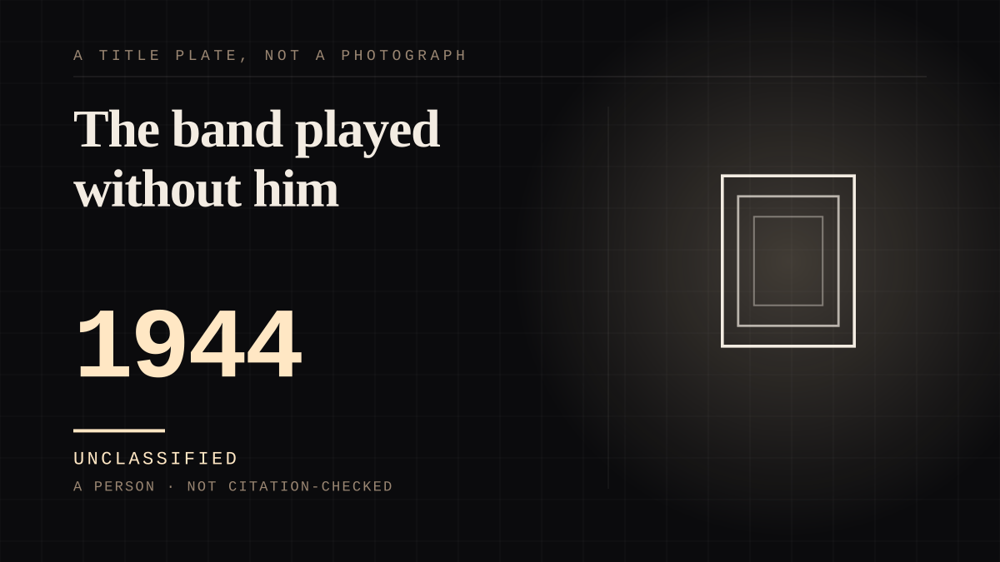

A person · 1944 ·
The band played without him
The most popular bandleader in America gave up the job to enlist, took his orchestra to England, and vanished over the Channel on a small plane to Paris - while the band played on.

He was at the top of the business, and he gave the business up to put on a uniform. Glenn Miller was the biggest star on the American pop-music scene when he set aside his career at its peak in 1942 - his orchestra had run off an unprecedented string of hits, and 'Chattanooga Choo Choo' was the number-one record in the country when Pearl Harbor was attacked - and he organised a band in uniform: 'I Sustain The Wings' on radio first, then the Major Glenn Miller Army Air Force Orchestra, which crossed to England in the summer of 1944 and gave more than three hundred live performances and some five hundred broadcasts to the troops. His commander, General Jimmy Doolittle, told him on a stage in July 1944: 'Next to a letter from home, Captain Miller, your organization is the greatest morale builder in the European Theater of Operations.' On 15 December 1944 he took a small plane to Paris and vanished. The UC-64A Norseman took off from RAF Twinwood Farm near Bedford on the afternoon of the 15th and was never seen again; no trace of the aircraft has ever been found. An Eighth Air Force Board of Inquiry in England determined in January 1945 that the plane went down over the English Channel due to a combination of human error, mechanical failure and weather; the Defense POW/MIA Accounting Agency still records the actual cause as unknown. Miller had taken a casual flight his travel orders did not authorise and had told nobody, so the army needed three days to realise he was missing. He was declared dead a year and a day later, and the case is filed, still, as non-recoverable, his name on the Wall of the Missing at Cambridge. The band went on: a Christmas Day broadcast from Paris to England and America was already scheduled. The far side of the bond was now a voice with no man behind it - records, broadcasts, an orchestra still booked under his name - and his listeners could not know. Of every idol in this corpus, he is the one with no grave and nothing to visit but the work, and the work is still playing.
Where it sits
1900 1900-1949 · 1944 1949
Provenance · 4 source record(s)
- retrievableThe UC-64A Norseman's 15 December 1944 disappearance en route from RAF Twinwood Farm near Bedford to Paris; never seen again, cause unknown; the AAF orchestra's England morale broadcasts; the Wall of the Missing at Cambridge American Cemetery; the case's category, non-recoverable.Defense POW/MIA Accounting Agency. 'Maj. Alton G. Miller' service member profile. ↗
- retrievableThe cancelled bookings of 13-14 December 1944 and the unauthorised 'casual' flight; the three days before the military realised he was missing; the Christmas Day broadcast from Paris to England and the United States that was scheduled; the official declaration of death a year and a day after the disappearance.Wikipedia. 'Glenn Miller.' ↗
- retrievable'The biggest star on the American pop-music scene' who set aside his career at its peak in 1942; the last concert under his direction on 27 September 1942 in Passaic, New Jersey; 'I Sustain The Wings' broadcast weekly from New York; Doolittle's 'greatest morale builder' line.HISTORY.com. 'Legendary bandleader Glenn Miller disappears over the English Channel.' This Day in History, 15 December. ↗
- retrievableThe band arrived in England in mid-June 1944; 300 live performances in England and 500 radio broadcasts to Allied troops; December approval for live performances in liberated Paris; departure from England on 15 December 1944; the aircraft disappeared over the English Channel.Air University. 'Glenn Miller Holiday Concert: The origins of an annual tradition.' 3 December 2018. ↗
Connected · 2 out, 1 in
It sits in